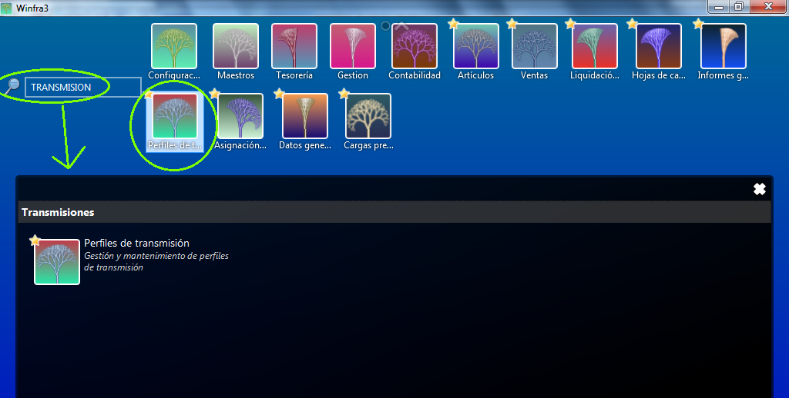
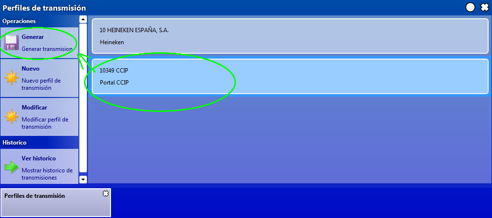
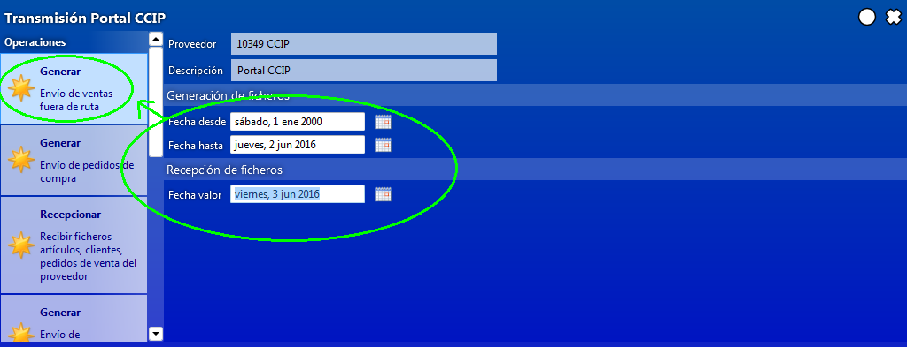
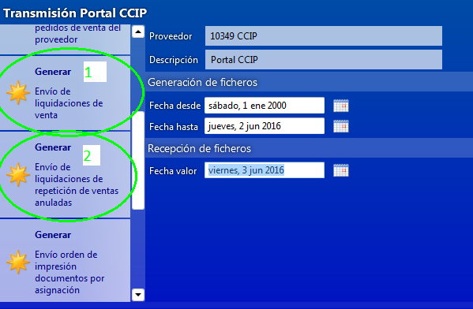
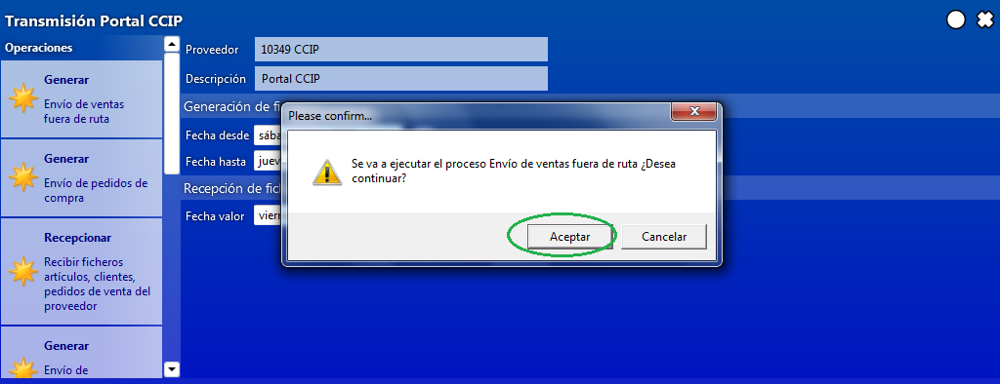
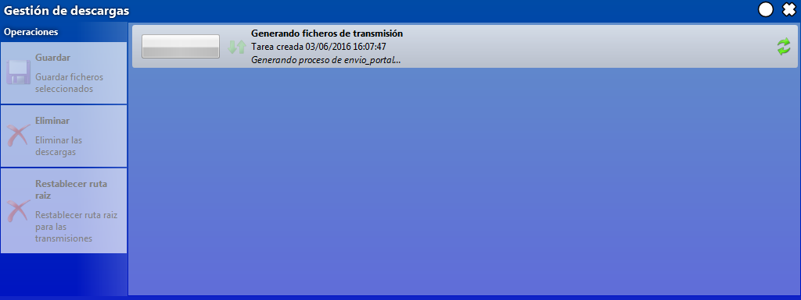

TRANSMISIÓN DE VENTAS A PROVEEDORES¶
Podemos acceder de dos formas distintas, o bien directamente desde el botón de Perfiles de Transmisión, o bien escribiremos simplemente la palabra transmisión en el buscador general, si buscamos en el buscador general nos aparecería una pantalla con el botón de Perfiles de transmisión:

Una vez entremos se nos muestra una pantalla donde nos aparecerán los proveedores a los que debemos de transmitir y simplemente seleccionaremos el que nos interese:
Esta transmisión que mostramos es para CCEP, para el resto de proveedores que se tenga que realizar transmisión lo ejecutaremos de la misma manera, con la diferencia que al guardar tendremos que buscar nosotros la carpeta donde lo guardamos puesto que la ruta no está configurada.

Sencillamente seleccionaremos el proveedor y luego clicaremos sobre el botón de Generar Transmisión. Esto nos enviara a la siguiente pantalla, donde lo más importante es la selección de las fechas de transmisión, la finalidad de esta pantalla es que si hay alguna venta que por lo que sea no se ha transmitido en el día podamos transmitirla después, por que en la selección la fecha desde siempre será anterior al día de la transmisión (se aconseja que usemos siempre una fecha anterior que nos proporcione un periodo muy amplio de tiempo), la fecha hasta tiene que ser la fecha de servicio, y en fecha de es la del día que realizamos la transmisión, una vez puestas las fechas clicaremos en el botón de generar:

De normal el botón de Generar que usaremos será siempre el primero, que es el de Generar Envío de ventas fuera de ruta; si la venta se gestiona desde el portal de transmisión del Proveedor usaríamos el botón de Generar Envío de Liquidaciones de ventas, en este caso enviamos todos los albaranes de la fecha de servicio que hemos puesto en la casilla de Fecha Hasta, y después clicaremos en el de Generar Envío de Liquidaciones de repetición de ventas anuladas, que lo que hará es que si yo he anulado algún albarán en Winfra porque no he podido servirlo por el motivo que fuera, lo anula en el portal de Coca-cola y lo vuelve a generar con la fecha de servicio modificada:

Una vez le damos al botón de Generar correspondiente nos sale una ventana que nos avisa de que vamos a generar una transmisión, le daremos a Aceptar:

En ese momento el sistema comenzaría a generar el fichero de transmisión:
